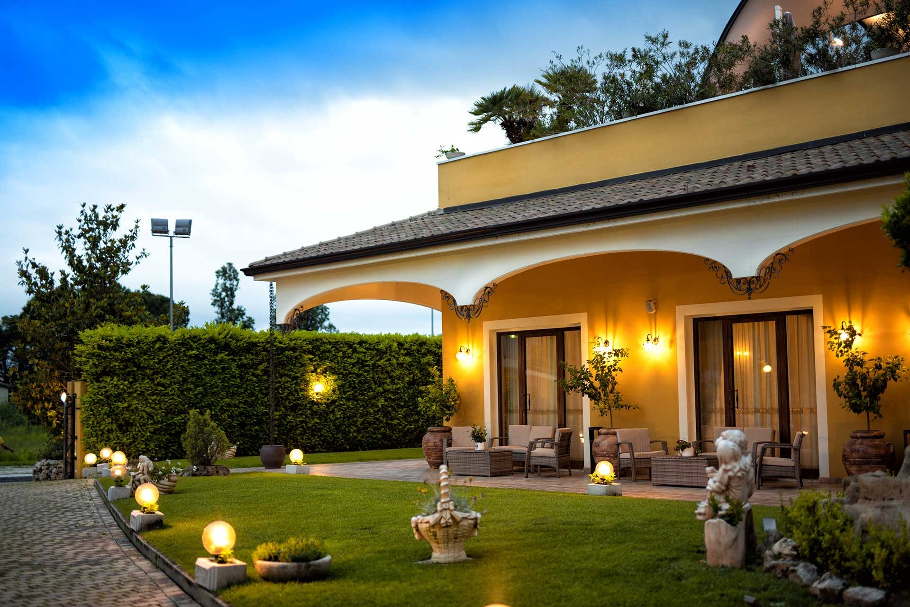
Villa BricconeRistoranteRicevimenti
Dove ogni momento diventa un ricordo.
Manoppello · Abruzzo
Un luogo
da vivere.
Una cena che si allunga fino a tardi. Una festa tra le persone più care. Il giorno che si ricorderà per sempre.
Villa Briccone è un ristorante e una location per ricevimenti ed eventi a Manoppello, in Abruzzo: una villa con portici, giardini e piscina, dove ogni occasione trova lo spazio, l'atmosfera e la cura che merita.
Entra nella villaLa Villa
L'eleganza di una
casa italiana.
Le arcate del portico, il colore caldo della facciata, i giardini curati e le luci che si accendono al tramonto. Ogni angolo della villa accoglie con discrezione e con calore.
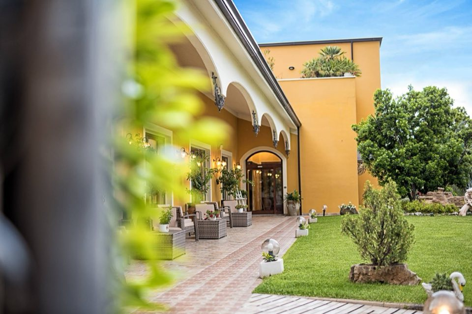
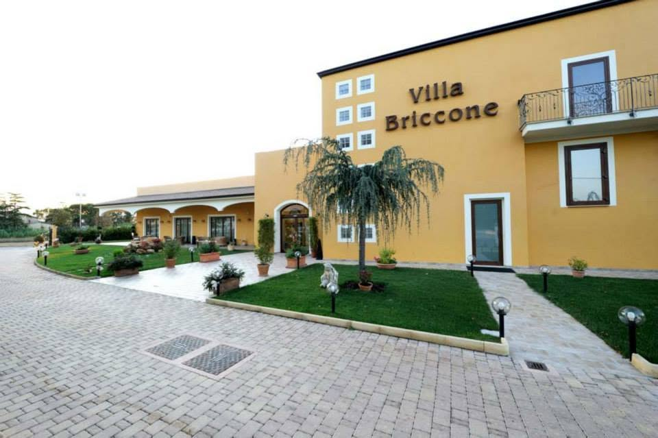
Arcate, giardini e luci calde: la bellezza semplice di una villa italiana.

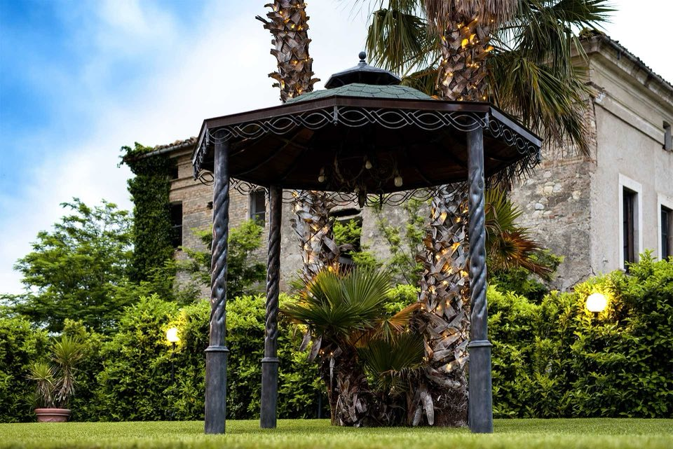
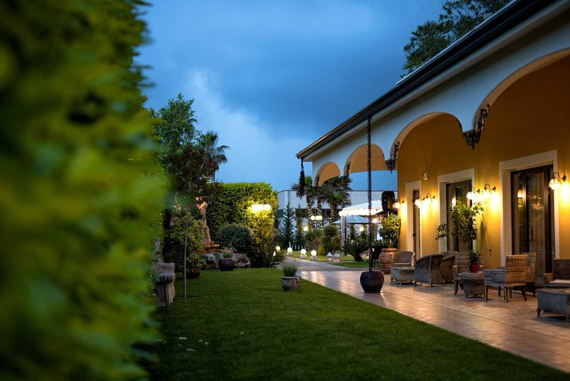
Dalla luce del giorno alla magia della sera.
Prati curati, palme, sentieri e giochi d'acqua. Di giorno il giardino si apre alla luce; al tramonto si accendono lanterne e lampioni, e tutto diventa più intimo.
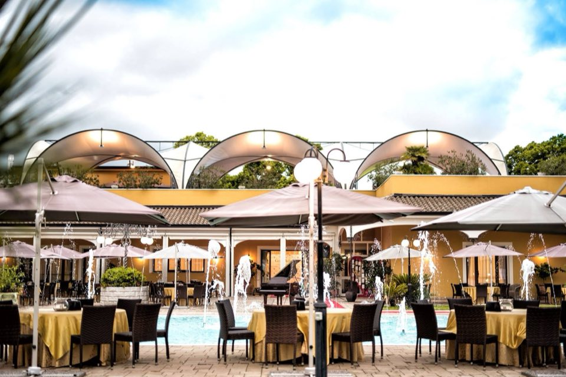
La piscina
Acqua, luce
e convivialità.
Le fontane della piscina, gli ombrelloni, i tavoli all'aperto: uno scenario che accompagna l'aperitivo, la cena e la festa.
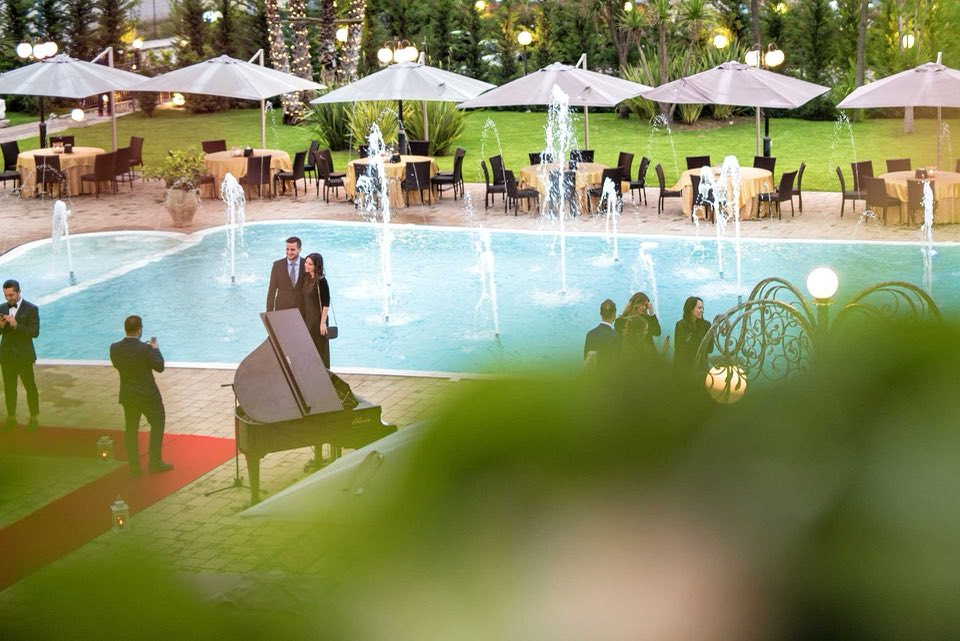
Il Ristorante
A tavola,
come in un'occasione speciale.
Tovaglie bianche, candelabri, lampadari di cristallo.
Sale luminose che accolgono con la stessa attenzione una cena a due e un pranzo di festa. E quando il tempo lo permette, la tavola si apparecchia anche all'aperto, accanto alla piscina.
Per prenotare un tavolo, contattaci direttamente.
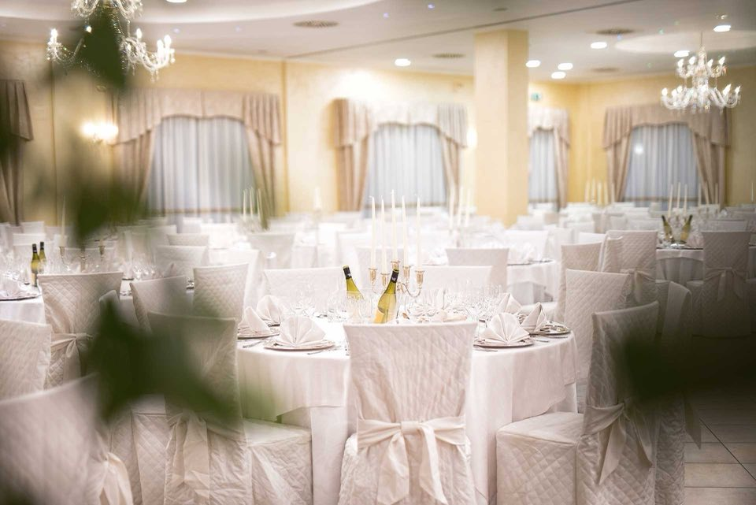
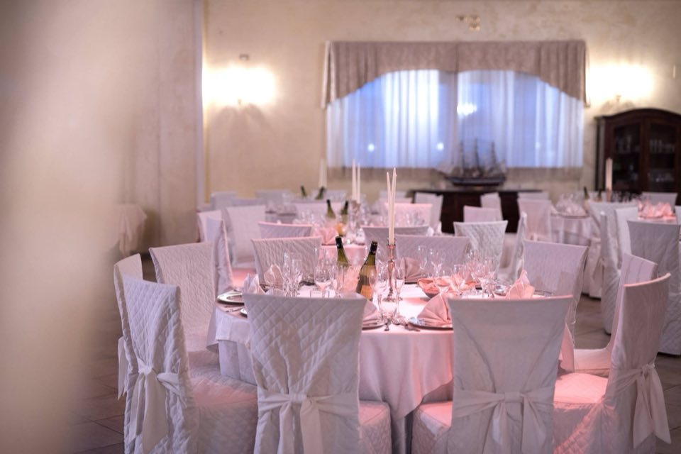

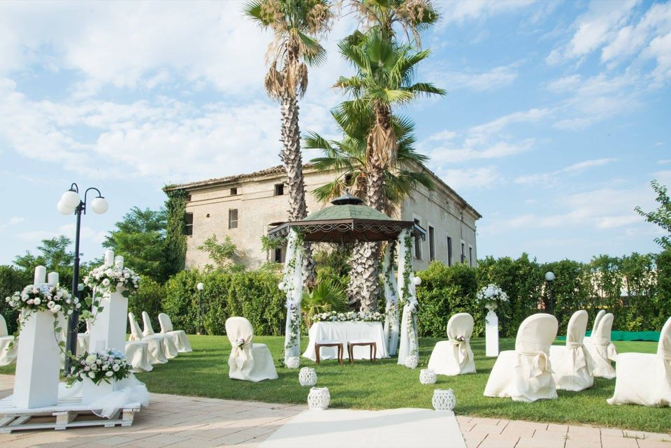
Matrimoni & Eventi
I momenti che meritano
di essere ricordati.
Il sì pronunciato in giardino. L'arrivo degli ospiti sul tappeto rosso. Il brindisi a bordo piscina, la festa che continua sotto le luci della sera.
Ogni occasione è diversa, e merita di essere raccontata. Parlateci della vostra: la immagineremo insieme.
Parliamone
-
01
Matrimoni
Dal sì in giardino alla festa della sera.
-
02
Cerimonie
Gli appuntamenti importanti della vita, celebrati con eleganza.
-
03
Ricevimenti
Tra il giardino, la piscina e le sale della villa.
-
04
Feste private
Compleanni, anniversari, ricorrenze: le vostre persone, il vostro momento.
-
05
Eventi speciali
Ogni occasione che meriti un luogo all'altezza.
Un dettaglio
Ogni dettaglio
ha la sua musica.
Un tappeto rosso, le lanterne accese, un pianoforte in giardino.
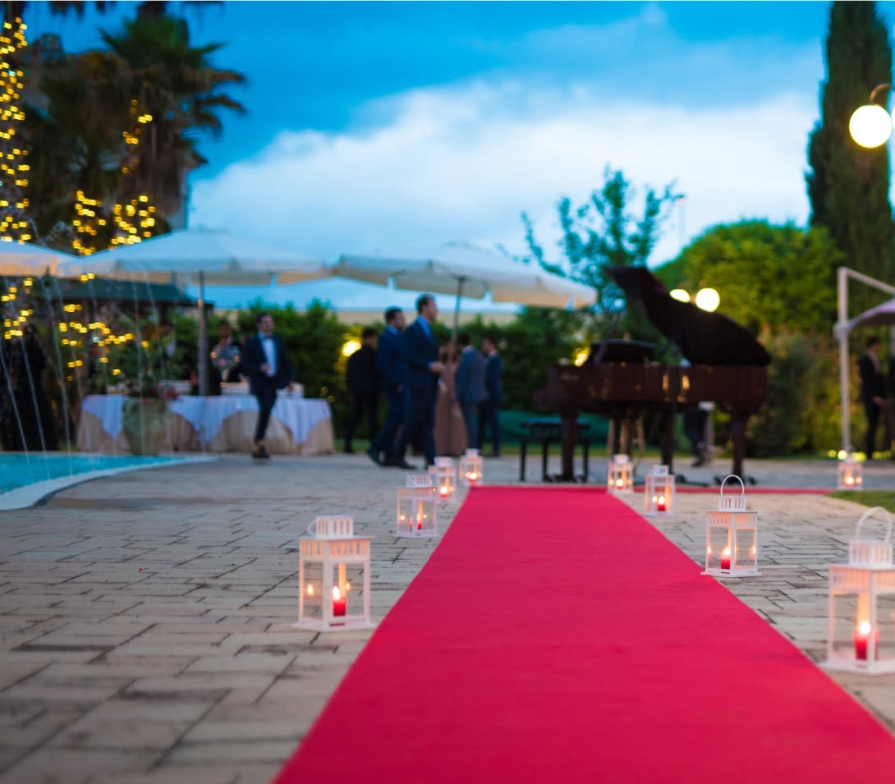
Galleria
Frammenti di villa.
Contatti
Il prossimo momento
potrebbe iniziare qui.
Per prenotazioni, eventi e informazioni, contatta direttamente Villa Briccone.
- Telefono
- [TELEFONO]
- [EMAIL]
- Dove
- Manoppello, Abruzzo